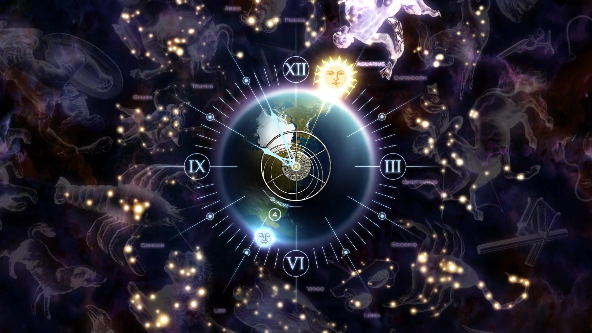

| Wind signs | Fire signs | earth signs | water signs |
|---|---|---|---|
| Gemini | Aries | Taurus | Pisces |
| Aquarius | Leo | Virgo | Scorpio |
| Libra | Sagittarius | Capricorn | Cancer |
Water signs symbolize spring and attach importance to emotion;
Fire signs symbolize summer and emphasize behavior;
Earth signs symbolize autumn and represent pragmatism and steadiness;
The wind sign symbolizes winter and emphasizes wisdom and communication;
The four natural elements of earth, water, fire and wind represent the images in the order of four seasons.
The main characteristics of Gemini's personality are changeable thinking, unrestrained, and endless curiosity about all kinds of things outside.
go to knowLibra demands a balance in everything, and maintaining a relationship with others is his goal in life. They are most likely to feel lonely and often feel empty in their hearts.
go to knowAquarius people are not easy to change their opinions or advocate ink dyeing, but on the other hand, they are extremely tired of arguing with others.
go to knowCancer is a visionary who is not willing to innovate in practice. Eager to meet the passion of life. He is likable, hospitable and dedicated to the people he adores.
go to knowScorpio has a strong central image. From the point of view of one's life, this period of time is just the beginning of middle age.
go to knowPisces girl's life is full of imagination and strong spiritual pursuit of color. The heart often reflects colorful fantasy.
go to knowLeo is sunny, fraternal and has a wide range of friends. They are eager for praise from others. He hopes that his wisdom, talent and generosity will be recognized by everyone.
go to knowAries is like a child, straightforward, passionate, impulsive, but also self-centered and very childish.
go to knowCapricorn is the most patient, the most careful and the kindest of the twelve signs. They are down-to-earth and stubborn.
go to knowTaurus is a very conservative sign, like stability, do not love change. In character, it is slow and hot, and needs a long adaptation period to work, life and environment.
go to knowVirgo pursues perfection. It's their characteristic to be picky. Most Virgos are modest, but they put a lot of pressure on themselves.
go to knowSagittarius people are like the arrow on the string, they take the initiative to attack. He is optimistic, honest, enthusiastic and likes challenges.
go to know